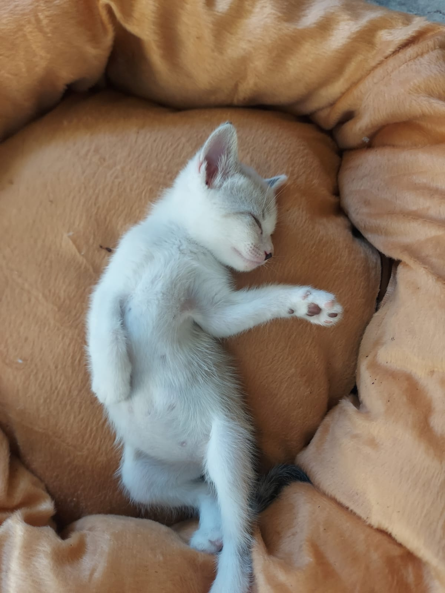

Frajola Copinho

Data de nascimento: 27 de agosto de 2025
Idade atual: dias de vida
Alimentação: Ração para filhotes (até 12 meses)
Observações: Gato preto com patas brancas e olhos cinzas
Nial Caixinha

Data de nascimento: 27 de agosto de 2025
Idade atual: dias de vida
Alimentação: Ração para filhotes (até 12 meses)
Observações: Gato branco com manchas cinzas claras